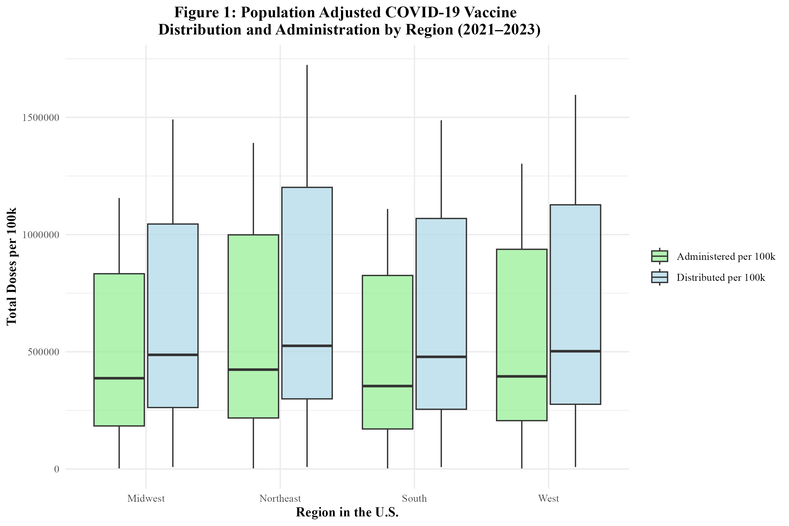

Analysis of COVID-19 Vaccination Trends: Distribution and Administration Between 2021 and 2023
Authors
- Natalie Cann \(^{1}\)
Author Affiliations
- Masters in Public Health Candidate, University of Georgia
\(\dagger\) Disclaimer: The opinions expressed in this article are the author’s own and don’t reflect those of their university affiliations.
For full project, visit the repository: https://github.com/NatalieCann16/Cann-MADA-project/tree/main
1 Summary/Abstract
This project presents an analysis of COVID-19 vaccine distribution and administration trends in the United States from 2021 to 2023, utilizing publicly available data from the Centers for Disease Control and Prevention. The analysis focuses on three primary research questions: (1) How do regional differences impact the distribution and administration of COVID-19 vaccines, and are these patterns associated with specific vaccine manufacturers?; (2) How have regional patterns and manufacturer-specific trends in distribution and administration changed over time?; (3) Can the proportion of Pfizer vaccines distributed be predicted by several synthetic variables, year, MMWR week, and doses distributed per 100k? Exploratory data analysis revealed that the Pfizer COVID-19 vaccine led in both the number of doses distributed and administered, followed by Moderna. Regional analysis uncovered that the Northeast consistently had the highest number of doses distributed and administered after controlling for regional population sizes. The models to predict the proportion of Pfizer vaccines administered from synthetic variables, doses distributed per 100,000 population, year, and morbidity and mortality weekly report week were simple linear regression, multiple linear regression, least absolute shrinkage and selection operator regression, and random forest models. Overall, these models did not perform well. This indicates that these variables are not strong predictors of the proportion of Pfizer vaccines administered. However, the model that performed the best was a random forest model utilizing all synthetic variables and year. A key limitation in this project was the lack of appropriate predictor variables within the CDC dataset. This underscores the need for better data collection and reporting of vaccine distribution and administration. Further research is needed to assess the factors influencing COVID-19 vaccine manufacturer specific distribution and administration.
2 Introduction
2.1 General Background Information
Respiratory illnesses are a large burden to both medical and public health systems. These illnesses are known to spike in the colder months, such as December, January, and February. One such respiratory virus is COVID-19, also known as severe acute respiratory syndrome coronavirus 2 (SARS-CoV-2) (1). COVID-19 was declared a pandemic in 2020. The virus is known to spread through fluid droplets shared between individuals in close contact as well as through the air (1). The spike protein is known to mediate entry of the virus into host cells via its S1 subunit, which binds to a receptor on the host cell, and S2 subunit, which allows the virus to fuse with the host cell (2). Therefore, the spike protein is a major antigen of the COVID-19 virus recognized by the immune system.
There are two different types of COVID-19 vaccinations available in the United States (U.S.). The first is the mRNA vaccine, which uses mRNA created in a laboratory that triggers an immune response within the body that produces antibodies to protect against COVID-19 (3). The second is the protein subunit vaccine, which contains spike proteins from the virus as well as an adjuvant; this enables the body to produce antibodies and better recognize the spike protein in the future (3). The Pfizer-BioNTech and Moderna vaccines are both mRNA vaccines (4). The Novavax vaccine is a protein subunit vaccine (4). The Janssen vaccine, also known as the Johnson and Johnson vaccine, utilized an adenovirus as a vector (5). Adenovirus vaccines use an omnipresent virus that is altered so that it cannot cause illness or integrate into the host’s DNA (5). The adenovirus is engineered to contain genes involved in making the COVID-19 spike protein, which then leads to the immune system producing antibodies for the spike protein (5). The Janssen vaccine was discontinued in May 2023 (4).
Research on the distribution of vaccines as a whole has been relatively limited. Vaccine distribution and administration have not had the best documentation throughout history in both the U.S. and globally (6). Few states have effective systems to track vaccine distribution, administration, inventory, and demand (6). As a result of this, in the U.S., some regions receive more vaccines than are used, while other regions do not receive enough vaccines to fulfill the demand (6). Not only is this an ineffective use of resources, but it also has an economic cost (6). Successful distribution and administration of vaccines, especially in times of emergency, is crucial as it can lower the burden on healthcare systems and lower mortality (7). These issues convey the importance of effective vaccine data collection and reporting in order to improve the efficiency of vaccination campaigns.
While the COVID-19 vaccines were developed in a timely response, the U.S. was not prepared to effectively distribute these vaccines. Healthcare workers and elderly individuals were prioritized for vaccination, which was a great first step. However, there proved to be issues with the distribution of the vaccines. First, vaccines distributed to pharmacies and other small venues were administered at a low rate, indicating poor distribution plans (7). Additionally, the storage and transport of the COVID-19 vaccines was a challenge as the vaccine needed to be kept at a very low temperature. This proved to be difficult to incorporate into planning effective distribution of the COVID-19 vaccine (7). Research must be done in order to better respond to regional vaccine demand in emergency, and non-emergency, situations in the future.
Research has been done to determine ways in which the distribution of the COVID-19 vaccine during the pandemic could be improved. A study by Muckstadt et al. (2023) proposed a new distribution strategy that would have allow for more effective distribution of the COVID-19 vaccine in the U.S. during the pandemic (7). Another study by Bertsimas et al. (2021) proposed the use of the DELPHI model to capture the effects of the vaccine and differing mortality rates across age groups to improve the allocation of the COVID-19 vaccination (8). Building on this body of research, this project aims to assess how regional and manufacturer-specific distribution and administration trends differ and have changed over time. Furthermore, it attempts to determine whether the manufacturer-specific proportion of total vaccines administered can be predicted by several synthetic variables. Understanding these patterns may offer additional insight into how vaccine characteristics, supply chain logistics, and demographic or regional factors influence distribution outcomes.
2.2 Questions to be Addressed
As introduced previously, the three questions that will be addressed in this project are as follows:
How do regional differences in the United States influence the distribution and administration of COVID-19 vaccines, and are these patterns associated with specific vaccine manufacturers?
How have regional patterns and manufacturer-specific trends in COVID-19 vaccine distribution and administration evolved over time in the United States?
Can the proportion of Pfizer vaccines distributed be predicted by several synthetic variables (listed in the modeling section), year, MMWR week, and doses distributed per 100k?
It is hypothesized that the Northeast region of the U.S. will have the highest uptake of the COVID-19 vaccine due to the area being predominantly liberal. Left-leaning individuals tend to be more trusting of the COVID-19 vaccine (9). It is believed that Pfizer will have the highest distribution and administration of the vaccine as it received a significant amount of media coverage as compared to other manufacturers (10). Furthermore, it is likely that the distribution and administration of the COVID-19 vaccine peaked around 2022 during the height of the pandemic. Lastly, it is hypothesized that the models will not sufficiently predict the proportion of Pfizer vaccines distributed since synthetic variables were used.
3 Methods
3.1 Schematic of Workflow for Analysis
First, the data was obtained from the Centers for Disease Control and Prevention (CDC) and the population data was obtained from the U.S. Census Bureau. For more details on the datasets, see the Data Acquisition section below. Then, the data was processed and cleaned. The data was sorted by MMWR week and region. For more details on this, see the Data Cleaning Process section. Then, exploratory data analysis was performed. From this, the answers to the first two research questions were obtained. Finally, in order to answer the final research question, models were performed. The data was split into train and test datasets and five-fold cross-validation repeated five times was performed. The models used were: simple linear regression, multiple linear regression, least absolute shrinkage and selection operator (LASSO) regression, and random forest modeling. The models were evaluated using RMSE (Root Mean Square Error) values, R-squared values, and their residual plots were observed.
3.2 Description of the Data and Data Acquisition
COVID-19 Dataset
This dataset came from the CDC and contains information on the distribution and administration of COVID-19 vaccinations between 2020 and 2023 (11). Data is included from all sites that distribute and administer vaccinations in the U.S., such as jurisdictional partner clinics, retail pharmacies, dialysis centers, long-term care facilities, Federal Emergency Management Agency (FEMA), and federal entity facilities. The CDC states that the dataset was provided by IISInfo. The data was downloaded directly from the CDC and was last updated May 12, 2023. The dataset contains both overall distribution and administration data, while also including distribution and administration data specific to each manufacturer. Furthermore, there are variables stating the morbidity and mortality weekly report (MMWR) week that the data was reported during as well as the state from which the data was reported. The data from 2020 is not as well documented as that of 2021 through 2023; therefore, only data from 2021 to 2023 will be used in this project.
U.S. Census Bureau Dataset
Some U.S. regions, such as the South, has a disproportionately higher population than the rest of the major regions. In 2022, the South had 128,716,192 residents (12). Therefore, population must be controlled for in this analysis. In order to control for regional population, U.S. Census Bureau data of the four major U.S. region’s populations between 2021 and 2023 was used (13). The four major regions are the Midwest, Northeast, South, and West. Note the states included in each region within the map included in the data cleaning section.
3.3 Data Cleaning Process
The COVID-19 vaccine dataset contains 109 variables and 38,488 observations. The variables of special interest in this dataset are: Date, MMWR week, Location, Total Distributed Doses, Total Manufacturer-Specific Distributed Doses, Total Administered Doses, and Total Manufacturer-Specific Administered Doses.
The following data processing and cleaning steps were performed:
Defined variables of interest
Assessed missingness of data and variable classes
Used the lubridate package to fix the date format
Select variables of interest to work with for analysis
Created Region variable and sorted U.S. states into their appropriate geographic regions
Manipulated dataset to only include data from 2021 to 2023 (data from 2020 was not as well documented, and therefore was excluded)
Summed distribution and administration variables by MMWR week and region (each region had its own row for each MMWR week)
Added U.S. Census Bureau Regional Population Data in order to properly control for population by calculating distributed or administered vaccines per 100,000
Created synthetic variables to use in modeling
Save final dataset as an RDS file
In order to categorize the states into their appropriate regions, the CDC’s geographic divisions were used (14). The graphic below displays these regions. For simplicity, only the Northeast, Midwest, South, and West regions were used in this project. Note the states included in each region within the map below.
4 Results
4.1 Exploratory and Descriptive analysis
Table 1 displays the total counts of COVID-19 vaccines distributed and administered in 2021, 2022, and 2023 for each region of the U.S. The mean total distributed doses of the vaccine for the U.S. as a whole between 2021 and 2023 was determined to be 5.667e+08; the mean total administered doses of the vaccine for the U.S. between 2021 and 2023 was 4.479e+08 (Supplement Table 1). There was a nearly perfect positive correlation of 0.99 between the number of total weekly doses distributed and administered (Supplement Figure 1). It can be seen that Pfizer had the highest number of doses distributed and administered, followed by Moderna, Janssen, and Novavax. It should be noted that the Novavax vaccine was not made available until 2022 and that the Janssen vaccine was discontinued in 2023. Across all three years of interest, the South had both the highest number of COVID-19 vaccines distributed and administered. The West had the second highest number of vaccines distributed and administered. The Midwest had the third highest number of vaccines distributed and administered. The Northeast had the lowest number of vaccines distributed and administered. However, the Midwest and Northeast’s numbers were very similar.
Table 2 displays the total counts of COVID-19 vaccines distributed and administered in 2021, 2022, and 2023 for each region of the U.S. after being adjusted by population size. After this adjustment, the mean total distributed doses per 100,000 population in the U.S. between 2021 and 2023 was 687,974; the mean total administered doses per 100,000 population in the U.S. between 2021 and 2023 was 549,053 (Supplement Table 1). These numbers are likely very high due to the fact that multiple doses are required for the COVID-19 vaccine. After adjustment, the Northeast actually had the highest number of doses distributed and administered between 2021 and 2023. The West followed behind the Northeast in doses distributed and administered. In general, the South and Midwest had comparable numbers. The Midwest had higher numbers than the South in all but one case, the distributed doses in 2023. Pfizer had the greatest number of doses administered and distributed, followed by Moderna and then Janssen. For quick comparison with Table 1, the formatting of reporting doses by Millions was kept. Therefore, Novavax, as well as Unknown Manufacturer, were reported as 0 million as they were not high enough to surprass this threshold.
Figure 1 shows the distribution of the COVID-19 vaccine by region from 2021 to 2023. The Northeast’s dominance in the average number of COVID-19 vaccines distributed and administered is visually apparent. The West comes in second. The Midwest and South have similar numbers. Figure 1 also displays the administration of the COVID-19 vaccine by region between 2021 and 2023. It can be seen that the Northeast also had the highest average weekly number of COVID-19 vaccines administered. The West follows and actually had the highest correlation (0.999) between doses administered and distributed (Supplement Table 2). The Midwest and South have similar numbers. Overall, regional trends in vaccine distribution and administration were relatively consistent.

In Figure 2, the distribution of the COVID-19 vaccine by manufacturer in the U.S. is displayed. The Pfizer vaccine had the highest number of doses distributed, followed by Moderna, Janssen, and Novavax. Figure 2 also displays the administration of the COVID-19 vaccine by manufacturer in the U.S. The trends are similar to those of distribution. Pfizer had the highest number of doses administered, followed by Moderna, Janssen, and lastly, Novavax. A significant number of doses were attributed to unknown manufacturers, likely due to incomplete vaccine data records.
Figure 3 displays the distribution of the COVID-19 vaccine by region over time. It can be seen that the distribution of the vaccine rises between 2021 and 2022, but then begins to rapidly fall. All regions follow this trend. However, the doses distributed in the Northeast appear to be significantly higher than the other regions. Between 2022 and 2023, there was an 87.4% decrease in doses distributed in the South; an 87.0% decrease in doses distributed in the West; an 86.7% decrease in doses distributed in the Midwest; and an 86.9% decrease in doses distributed in the Northeast (Supplement Table 3).
Figure 4 displays the administration of the COVID-19 vaccine by region over time. The administration of the vaccine is also on the rise between 2021 and 2022, but then rapidly drops off as 2022 goes on. Each region’s trend is similar for both the distribution and administration of the vaccine. Between 2022 and 2023, there was an 88.9% decrease in doses administered in the South; an 88.4% decrease in doses administered in the West; an 88.4% decrease in doses administered in the Midwest; and an 88.5% decrease in doses administered in the Northeast (Supplement Table 3).
Figure 5 displays the distribution of the COVID-19 vaccine by manufacturer over time. It can be seen that the distribution of the vaccine rises between 2021 and 2022, but then begins to rapidly fall. All manufacturers follow this trend. This trend was observed in the distribution and administration of vaccines by region (Figure 3) as well. Between 2022 and 2023, Janssen observed a 90.1% decrease in doses distributed; Moderna observed an 87.8% decrease; Pfizer observed an 87.4%; and Novavax observed a 33.3% decrease (Supplement Table 4.1). Novavax’s percent decrease in doses distributed is much lower due to the fact that this vaccine did not start rolling out until 2022. By then, Moderna and Pfizer had been dominating the distribution field.
In Figure 6, the administration of the COVID-19 vaccine by manufacturer over time can be seen. The administration of the vaccine is also on the rise between 2021 and 2022, but then rapidly drops off as 2022 goes on. This trend was also observed in the distribution and administration of vaccines by region (Figure 4). In both Figures 5 and 6, Pfizer and Moderna dominated in the distribution and administration of the vaccine. This goes along with what was seen in Figure 2. Between 2022 and 2023, Janssen observed a 90.1% decrease in doses administered; Moderna observed an 88.9% decrease; Pfizer observed an 88.8% decrease; and Novavax observed a 92.6% decrease (Supplement Table 4.2).
4.2 Modeling
The population adjusted data was split into training data and test data based on year. In order to account for the unique trends present in the three different years, 75% of the data from each year within the dataset went into the training data, while the remaining 25% of the data from each year went into the test data. Then, a null model containing no predictors was fitted in order to predict the outcome, the proportion of Pfizer doses distributed. This null model properly predicted the mean proportion of Pfizer doses distributed. The RMSE of the null model was 0.169 (Supplement Table 5). Five-fold cross-validation was performed and repeated five times to minimize potential overfitting. Then, each predictor was tested by themselves using Simple Linear Regression. The predictors used were: doses distributed per 100k, average age of those vaccinated, vaccine hesitancy index, vaccine accessability index, the proportion of males who received vaccines, public health campaign intensity score, burden of COVID-19 score, year, and MMWR week. All predictors were synthetic except for year, MMWR week, and doses distributed per 100k. None of the predictors stood out as having outstanding metrics. However, year appeared to be the best predictor, with an RMSE of 0.142 and an R-squared of 0.154 (Supplement Table 6). See Supplement Table 6 for all Simple Linear Regression results.
Three models were fit to the training data: multiple linear regression, LASSO regression, and random forest modeling. For each type of model, two sets of predictors were run. The first set contained all synthetic predictors, year, MMWR week, and doses distributed per 100k. The second set of predictors contained all synthetic predictors and year. This model, to which this set of predictors is fit, will be referred to as the ‘modified model.’ When fit to the training data, the first multiple linear regression model had an RMSE of 0.103 and an R-squared of 0.561. Figure 7 displays the observed vs predicted plot for this model, which displays significant clustering. The modified multiple linear regression model performed considerably worse and had an RMSE of 0.144 and an R-squared value of 0.138. Figure 8 displays the observed vs predicted plot for the modified multiple linear regression model. This plot also displays significant clustering.
Next, LASSO regression was performed in an attempt to reduce overfitting. The original LASSO regression model had an RMSE of 0.002 with an R-squared of 0.003. This R-squared is quite low; the multiple linear regression model’s R-squared value of 0.561 was much better. The observed vs predicted plot for this LASSO model is shown in Figure 9. The clustering pattern appears to be similar to that of the original multiple linear regression model in Figure 7. Next, the modified set of predictors was used in a LASSO regression model. This modified LASSO regression model had an RMSE of 0.004 and an R-squared of 0.011. Within the model’s observed vs predicted plot in Figure 10, there appears to be clustering with a similar pattern to that of the modified multiple linear regression model in Figure 8. Overall, it seems that the LASSO regression models did not perform well.
The final models run were random forest models. The first random forest model, including all predictors, resulted in an RMSE value of 0.008 and an R-squared value of 0.998. This indicated overfitting. In Figure 11, the model’s observed vs predicted plot is shown to display significant overfitting. Next, the modified random forest model was run. With an RMSE of 0.049 and an R-squared value of 0.929, this model performed better than the first random forest model. As can be seen, there appears to be some clustering within the bottom left and upper right corners of the modified model’s observed vs predicted plot in Figure 12. Overall, this model appeared to perform the best out of all the models run in this analysis. Therefore, this model would be fitted to the test data. Table 3 displays a summary table of the metrics of each of the models run.
When the modified random forest model was fit to the test data, an RMSE of 0.117 and an R-squared of 0.427 were obtained. This RMSE is higher than that of the model fit to the training data. Furthermore, the R-squared value is significantly lower, indicating that this model did not sufficiently fit the data. Figure 13 displays the model’s observed vs predicted plot. There appears to be much less of a close fit to the diagonal line than in Figure 12. Out of curiosity, the original random forest model that suffered from significant overfitting was fitted to the test data. The resulting RMSE and R-squared values were 0.013 and 0.993 respectively (Supplement Table 7). The observed vs predicted plot confirmed that overfitting remained an issue when the model was fitted to the test data (Supplement Figure 6).
5 Discussion
5.1 Summary and Interpretation
This project examined the distribution and administration of COVID-19 vaccines across regions of the United States from 2021 to 2023. Three key research questions were addressed: (1) How do regional differences impact the distribution and administration of COVID-19 vaccines, and are these patterns associated with specific vaccine manufacturers?; (2) How have regional patterns and manufacturer-specific trends in distribution and administration changed over time?; (3) Can the proportion of Pfizer vaccines distributed be predicted by several synthetic variables, year, MMWR week, and doses distributed per 100k? The synthetic variables created for this model were: the average age of those vaccinated in the region that week, the weekly COVID-19 vaccine hesitancy index, the weekly COVID-19 vaccine accessibility index, the weekly proportion of vaccines administered to males, the weekly public health campaign intensity score, and the weekly burden of COVID-19 score.
Descriptive analyses exhibited that Pfizer had the highest number of doses distributed and administered, followed by Moderna, Janssen, then Novavax between 2021 and 2023. It should be noted that the Novavax vaccine was not made available until 2022 and that the Janssen vaccine was discontinued in 2023. Furthermore, it was revealed that the Northeast consistently had the highest number of both distributed and administered doses across 2021 to 2023, followed by the West, the Midwest, and lastly, the South. Temporal analyses revealed that the distribution and administration of COVID-19 vaccines peaked between 2021 and 2022, followed by a sharp decline. This trend may be associated with public health campaigns, initial rollout efforts, and changes in public perception of the vaccine and the COVID-19 pandemic.
To assess whether the proportion of Pfizer doses distributed could be predicted by the previously described synthetic variables, as well as doses distributed per 100k, year, and MMWR week. Along with simple linear regression to assess each individual predictor, three models were utilized: multiple linear regression, LASSO regression, and random forest. The multiple linear regression models and LASSO regression models performed poorly. Overfitting was a significant issue with the first random forest model. The modified random forest model appeared to perform the best. The test data was fitted to this modified random forest model. The resulting metrics revealed that the model did not sufficiently fit the test data. This suggests that the synthetic variables used in this analysis were not strong predictors of the proportion of Pfizer vaccines distributed.
5.2 Strengths and Limitations
A strength of this research project is that the data was obtained from the CDC, which is a reliable source. The data contained a large number of observations from all states within the U.S., which enhanced the representativeness of the study. The use of standardized temporal units (MMWR weeks) allowed for consistent analysis of distribution and administration trends over time. Furthermore, data from the U.S. Census Bureau allowed for population differences to be controlled for.
However, there were a significant number of limitations to this project. First and foremost, there are always drawbacks to not collecting one’s own data. An issue that stemmed from this was that there were not enough predictor variables to use in the modeling analysis. Therefore, synthetic variables had to be created. These synthetic variables may not have fully reflected the influences on manufacturer-specific uptake (such as the proportion of Pfizer vaccines distributed). Overfitting appeared to be an issue with some of the models used in the analysis, such as the first random forest model. Additionally, many distributed and administered doses were reported with an “unknown manufacturer”, which may have limited the ability to obtain accurate estimates for each manufacturer. Furthermore, the dataset was limited to the United States, which may limit the generalizability of the findings to other countries.
5.3 Conclusions
In conclusion, this project revealed distinct regional and temporal trends in both the distribution and administration of the COVID-19 vaccine across the U.S. from 2021 to 2023. However, attempts to predict the proportion of Pfizer vaccines distributed using synthetic predictors and MMWR week were ultimately unsuccessful. Further research needs to be done to assess the factors that influence COVID-19 vaccine manufacturer-specific uptake. The collection of open-ended qualitative data from the public would be of great benefit to obtaining a deeper understanding of these factors.
6 References
- Coronavirus disease 2019 (COVID-19) - Symptoms and causes. (https://www.mayoclinic.org/diseases-conditions/coronavirus/symptoms-causes/syc-20479963). (Accessed February 21, 2025)
- Li F. Structure, Function, and Evolution of Coronavirus Spike Proteins. Annu Rev Virol [electronic article]. 2016;3(1):237–261. (https://www.ncbi.nlm.nih.gov/pmc/articles/PMC5457962/). (Accessed February 21, 2025)
- CDC. COVID-19 Vaccine Basics. 2024;(https://www.cdc.gov/covid/vaccines/how-they-work.html). (Accessed February 21, 2025)
- Comparing the COVID-19 Vaccines: How Are They Different? (https://www.yalemedicine.org/news/covid-19-vaccine-comparison). (Accessed February 21, 2025)
- The Johnson & Johnson adenovirus vaccine explained. (https://www.mayoclinic.org/johnson-johnson-adenovirus-vaccine-explained/vid-20510091). (Accessed February 21, 2025)
- Medicine NA of, National Academies of Sciences E, Division H and M, et al. Vaccine Distribution and Delivery. In: Globally Resilient Supply Chains for Seasonal and Pandemic Influenza Vaccines. National Academies Press (US); 2021 (Accessed April 18, 2025)(https://www.ncbi.nlm.nih.gov/books/NBK580009/). (Accessed April 18, 2025)
- Muckstadt JA, Klein MG, Jackson PL, et al. Efficient and effective large-scale vaccine distribution. International Journal of Production Economics [electronic article]. 2023;262:108921. (https://www.sciencedirect.com/science/article/pii/S0925527323001536). (Accessed April 18, 2025)
- Bertsimas D, Digalakis Jr V, Jacquillat A, et al. Where to locate COVID-19 mass vaccination facilities? Naval Research Logistics (NRL) [electronic article]. 2021;69(2):179–200. (https://onlinelibrary.wiley.com/doi/abs/10.1002/nav.22007). (Accessed April 18, 2025)
- Alemi F, Lee KH. Impact of Political Leaning on COVID-19 Vaccine Hesitancy: A Network-Based Multiple Mediation Analysis. Cureus [electronic article]. 15(8):e43232. (https://www.ncbi.nlm.nih.gov/pmc/articles/PMC10491458/). (Accessed April 30, 2025)
Pfizer dominates social media during Covid-19 - Clinical Trials Arena. (https://www.clinicaltrialsarena.com/news/pfizer-dominates-social-media-covid-19/). (Accessed April 30, 2025)COVID-19 Vaccinations in the United States,Jurisdiction | Data | Centers for Disease Control and Prevention. (https://data.cdc.gov/Vaccinations/COVID-19-Vaccinations-in-the-United-States-Jurisdi/unsk-b7fc/about_data). (Accessed May 1, 2025)Bureau UC. Growth in U.S. Population Shows Early Indication of Recovery Amid COVID-19 Pandemic. (https://www.census.gov/newsroom/press-releases/2022/2022-population-estimates.html). (Accessed April 17, 2025)United States Population Growth by Region. (https://www.census.gov/popclock/data_tables.php?component=growth). (Accessed May 1, 2025)Geographic division or region - Health, United States. 2024;(https://www.cdc.gov/nchs/hus/sources-definitions/geographic-region.htm). (Accessed April 17, 2025)